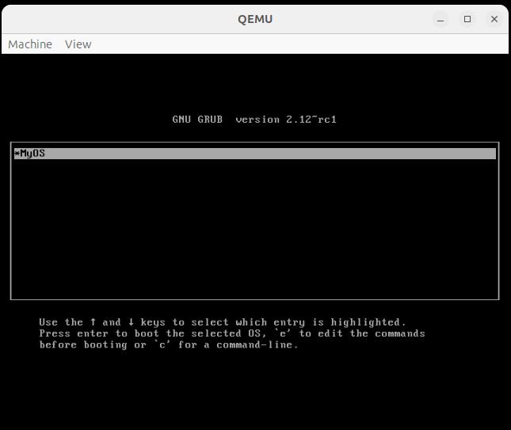

What
What we are trying to achieve
At this point we can increase the screen resolution to 640x480 4 bits-per-pixel and enhance the interface for user-applications to build more interesting software for the CustomOS.
Contents
Contents
Background
With the graphical terminal and keyboard input, Hard Disk I/O and the integrated C compiler we have everything in place to write more interesting software.
I’ve increased the screen resolution from 320x200 to 640x480 pixels to make the CustomOS more pleasant to work with.
In the following I’ll demonstrate how simple games and perhaps a network stack could be added.
How
Screen Resolution
Until recently I was using VESA mode 13h with 320 x 200 pixels and 8 bit per pixel. That mode uses 256 colors and is easy to handle as we can write full bytes to the graphics buffer.
Mode 12h has more screen resolution with 640 x 480 pixels, but uses 4 bit per pixel. Each bit is on a single plane that we need to write to.
Colors and Planes in 4-Bit Per Pixel Modes
The four planes in mode 12h for the 640x480 pixel resolution correspond to the components of color:
0 = blue
1 = green
2 = red
3 = grey
So, for example, if
- 0,1 and 2 are set we get white
- 1 and 2 are set we get yellow
- 0 and 1 are set we get cyan
Basic Set Pixel is not efficient enough
For a basic set pixel function, as found in other CustomOSes, we can select_plane, read the byte and apply a mask
as seen in the following code - we can optimize this as seen below:
// -- GitHub mallardtheduck/osdev - src/modules/hwpnp/vga
void select_plane(uint8_t plane) {
// -- write_sequencer(Sequencer_Registers::MapMask, (uint8_t)1 << plane);
outportb(0x3C4, 0x02);
outportb(0x3C5, (uint8_t)1 << plane);
// -- write_graphics(Graphics_Registers::ReadMapSelect, plane);
outportb(0x3CE, 0x04);
outportb(0x3CF, plane);
}
// -- GitHub levex/LevOS - kernel/Kernel/VGAdriver.cpp#L795
void graphicsSetPixel(char * graphicsBuffer, uint16_t x, uint16_t y, uint8_t color) {
if (x >= screenWidth || y >= screenHeight)
return;
unsigned wd_in_bytes, off, mask, p, pmask;
wd_in_bytes = screenWidth / 8;
off = wd_in_bytes * y + x / 8;
x = (x & 7) * 1;
mask = 0x80 >> x;
pmask = 1;
for(p = 0; p < 4; p++) {
select_plane(p);
if(pmask & color)
*(char*)(0xA000*16+off) = (*(char*)((unsigned int)0xA000*16 + off))|mask;
else
*(char*)(0xA000*16+off) = (*(char*)((unsigned int)0xA000*16 + off))&~mask;
pmask <<= 1;
}
}
Updating the entire screen means switching the planes very often. On QEmu this leads to crashes and artifacts.
Efficient double-buffering to write to screen
Using the above code directly is slow as it requires reading the byte first, before writing it out. Additionally we need to switch the plane four times.
This means if you want to fill a rectangle you will be running that hundred thousands of times.
To combat this I’m applying simple double buffering. Each plane ‘Blue’, ‘Green’, ‘Red’ and ‘Grey’ are stored in separate internal buffers.
Only when a flushing function, graphicsFlush is called, do I write the bytes to the graphics buffer. Additionally only the bytes that have been modified will be written.
char screenBlue[640*480/8];
char screenGreen[640*480/8];
char screenRed[640*480/8];
char screenGrey[640*480/8];
Similarly to caching I’ve added a ‘dirty’-flag indicating that the byte should be updated to the final graphics buffer the next time we flush.
bool graphicsBufferDirty[640*480/8];
With some refactoring the code turns into this:
void graphicsSetPixel(uint16_t x, uint16_t y, uint8_t color) {
if (x >= screenWidth || y >= screenHeight)
return;
color = color % 16; // only 4 bits allowed per pixel
char * currentScreenPlane = NULL;
unsigned int bytePos = (640 / 8) * y + x / 8;
unsigned int bitPos = 0x80 >> (x % 8);
unsigned int colorPlaneMask = 1;
bool changed = false;
for(unsigned int p = 0; p < 4; p++) {
if(p == 0) currentScreenPlane = screenBlue;
if(p == 1) currentScreenPlane = screenGreen;
if(p == 2) currentScreenPlane = screenRed;
if(p == 3) currentScreenPlane = screenGrey;
char oldValue = currentScreenPlane[bytePos];
if(colorPlaneMask & color) { // -- bit is set for current plane
currentScreenPlane[bytePos] = oldValue | bitPos; // set
} else {
currentScreenPlane[bytePos] = oldValue & ~bitPos; // unset
}
if(currentScreenPlane[bytePos] != oldValue) {
changed = true;
}
colorPlaneMask <<= 1;
}
// -- prepare transfer to graphics buffer
if(changed) {
graphicsBufferDirty[bytePos] = true;
}
}
Notice how the value we need to read oldValue is taken from the internal buffers and not the hardware buffers.
I’m using only the internal buffers for the reading as reading from hardware graphics buffers is extremely slow.
The flushing function just writes the bytes out that are marked as ‘dirty’:
void graphicsFlush() {
for(uint16_t bytePos = 0; bytePos < 640*480/8; bytePos++) {
if(graphicsBufferDirty[bytePos]) {
char * graphicsBuffer = (char *)0xA000;
unsigned int graphicsBufferBytePos = 40960 * 15 + bytePos; // -- graphics buffer is at end of 64k
char * currentScreenPlane = NULL;
for(unsigned int p = 0; p < 4; p++) {
select_plane(p);
if(p == 0) currentScreenPlane = screenBlue;
if(p == 1) currentScreenPlane = screenGreen;
if(p == 2) currentScreenPlane = screenRed;
if(p == 3) currentScreenPlane = screenGrey;
graphicsBuffer[graphicsBufferBytePos] = currentScreenPlane[bytePos];
}
graphicsBufferDirty[bytePos] = false;
}
}
}
With that we get fast and properly working 640x480 px 4 bpp mode.
User Space Applications with Graphics and Keyboard
I’ve extended the list of functions that the C-compiler makes available to user space applications.
setPutChar(character)- write one character to the CustomOS shellsetGraphicsSetPixel(x,y,color)- set a single pixelsetGraphicsFlush()- flush graphicssetExit()- exit back to the CustomOS shell
Additionally, when user space applications are run, the CustomOS will call
init()- first call to initialize the user space applicationupdate()- if available, will keep the application running and call it approx. every 100mskeyboardDown(key, scancode)- if available and when a key is pressed this function is called on the user space application
That interface is sufficient to write interesting user space applications.
For example this application will draw a moving green line on the screen that can be controlled with the keyboard arrow keys.
It’s easy to see how this could be used to write a game like “Snake” that became popular with Nokia smartphones from the 90s.
Fixing Compiler Warnings
I had accumulated a bunch of smaller bugs and compiler warnings. These are best remedied by simply attempting to use the CustomOS for something remotely productive.
- the buffer sizes for loading files from disk were too small and chunked reads/writes had bugs. Currently I’m just reading/writing byte-wise, which is efficient enough for our use case.
- Rust expects constants to be in all-caps and variables and functions to be in snake_case notation.
- there were a bunch of unused variables
- when transitioning from 8bpp color more to 4bpp some color names and values had to be adjusted.
- filename strings weren’t always properly null-terminated
Now it builds with only a very small amount of warnings I have yet to fix, but runs very stably.
Network Stack
The built-in C Compiler allows us to run code “natively” on the CPU. This means the same functions that drop down to assembler machine operations, as in the kernel code, can also be used in user space applications to read and write data to/from the PCI bus. From a programming perspective reading and writing to an PCI IDE controller and reading and writing to a PCI network card is not that much different.
I’ve written two user space applications lspci.c and net-macaddr.c to demonstrate this. The first lists all PCI devices and detects the IDE-Controller and rtl8139 network card. The second reads the MAC (medium access control) address, also called physical network address, from the card.
We can see that reading and writing bytes to the network card from a user space application is easily possible. To send and receive, for instance, web pages via HTTPS-Get-Requests, we’d need to implement a network stack.
This is something I might do another time.
Progress
Future Goals
The kernel I would consider more or less completed. Intentionally the kernel currently handles only:
- booting
- displaying a shell
- graphics
- read/write access to disk
- editing files and source code
- and compiling/running that source code, the user-space applications
This is sufficient in order to add additional features solely by user space applications.
A list of features that could be added are:
Memory Protection
Currently the CustomOS crashes, when a erroneous user-space application runs. This would have to be fixed in the kernel itself.
- protect against jumps to invalid memory address
- stop execution of endless loops with a loop counter or watchdog timer
Running on real hardware/”bare-metal” machine
Modern computers have replaced some of the hardware that I’ve relied on in the QEmu emulation. To tun the CustomOS on a real computer I suspect some additional hardware drivers would need to be added.
- Keyboard/Mouse support with USB
- currently the CustomOS supports only PS/2
- PS/2 has been deprecated and replaced with USB on modern computers
- some older mainboards support a legacy mode for PS/2 compatibility, but I’m not sure how common that will be in the future
- to be safe we’d need to add some “Human Interface Device” (USB-HID) support
- porting a library for USB keyboard and mouse support from Arduino could be the easiest approach [5,6]
- Disk Input/Output
- reading and writing to disk would also have to be revisited
- modern computers use the “Advanced Host Controller Interface” (AHCI) instead of the old “AT Attachment Packet Interface” (ATAPI)/”Integrated Drive Electronics” (IDE)
- this is required for modern SATA hard drives
- of course drivers for AHCI [7] exist that could be ported
- we’d likely also need to implement “Direct Memory Access” (DMA) for it to work
Includes
The size of the source code of user space applications are limited
- allow adding other includes from the disk
- should be easily doable by adding
f_readfrom the FatFS library to the compiler.
- should be easily doable by adding
Threading
For many tasks such as editing and running code in parallel, playing audio while doing something else or a timeout on the network interface, multi-threading would be useful.
Some of these tasks can be circumvented using the PIT (Programmable Interrupt Timer) to trigger a timer interrupt, but proper multi-threading is essential for some tasks.
- allow multi-threading
Network
As mentioned above, a network stack could be interesting.
- Get the Time via NTP
- A simple TFTP or FTP server
- to be able to get files in and out of the CustomOS easily
- Send HTTPS GET requests
- grab stock market information
- the current weather
- control smart home devices on the home network
- Gopher
- I’ve come across a Gopher implementation in ZealOS (a fork of TempleOS) [4]
- it’s a clever alternative as Gopher pages are much easier to render than HTML laced with CSS and Java-Script
Entertainment
There are a few games that could be easily implemented or ported to the CustomOS.
- Breakout
- the game where you hit bricks with a ball until all bricks are destroyed
- is a bit more interesting than pong
- should be easy to implement perhaps in colors close to the Atari-style color scheme
- Asteroids
- there is a great implementation in C [1] that uses OpenGL (freeglut)
- the drawing functions use
glBegin(GL_LINE_LOOP);,glVertex2f,glEnd();to draw polygons - this could likely be easily ported to the CustomOS
- Doom
- there are ports called “doom-generic” [2,3] on GitHub
- it uses only keyboard input and direct writes to the graphics framebuffer
- it would be an easy port to the CustomOS
Productivity
Anything one would use during day-to-day work like proper text editors, drawing applications, spreadsheets could, with considerable effort, be implemented or ported to the CustomOS.
-
Image Viewer/Drawing Application
-
Better Text Editor
- the current editor is very rudimentary and could be improved.
- markdown support would be nice
- and also syntax highlighting
Audio
It is probably also possible to implement basic audio by filling sound card buffers.
The CustomOS wouldn’t be able to play anything in the background as long as we don’t have multi-threading, but it should be possible to output PCM buffers to the sound card.
- play PCM buffers on the sound card for alert sounds
- perhaps add an audio decoding library
- a lot of audio codecs have open-source decoders
- there are also single header implementations on GitHub that can be used
The bottom line is that anything can, in principle, be added. At some point we end up recreating what larger operating systems do a lot better.
Conclusion
The ability to add user space application makes it very easy to extend the CustomOS with additional features. Entire drivers can be written in user space and can directly access, for instance, the PCI bus.
I have a number of ideas on how to extend the functionality, however this project is becoming more and more time consuming. Adding drivers for a broad range of hardware devices is an uphill battle for a single person, but some basic necessities to run the CustomOS on real hardware would be nice.
1] https://github.com/attwoodn/c-asteroids 2] https://github.com/ozkl/doomgeneric 3] https://github.com/id-Software/DOOM 4] https://github.com/Zeal-Operating-System/ZealOS/blob/master/src/Home/Net/Programs/Gopher.ZC 5] https://github.com/felis/USB_Host_Shield_2.0/blob/master/Usb.cpp 6] https://github.com/felis/USB_Host_Shield_2.0/blob/master/usbhid.cpp 7] https://github.com/OS2World/DRV-AHCI/blob/master/src/os2ahci/ahci.c